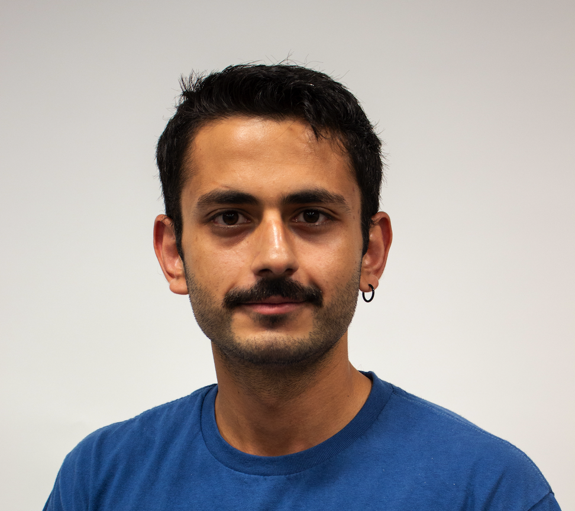

Kartik Hans
I’m a software engineer at Tensormesh, where I work on KV cache optimization for LLM inference. My research spans energy-efficient computing and distributed systems.
hans[at]sci[dot]pitt[dot]edu

Publications
Exploring Learned Data Reduction for Energy Savings on Battery-Powered Devices
IEEE MDM 2026
BibTeX Citation
@inproceedings{hans2026datareduction,
author = {Kartik Hans and Brian T. Nixon and Panos K. Chrysanthis},
title = {Exploring Learned Data Reduction for Energy Savings on Battery-Powered Devices},
booktitle = {2026 27th IEEE International Conference on Mobile Data Management (MDM)},
year = {2026},
pages = {235--243},
doi = {10.1109/MDM71479.2026.00036},
publisher = {IEEE}
}
CarbonSim: A Lifecycle-Aware Framework for Evaluating Carbon Tradeoffs in Hardware Upgrade Decisions
ACM IGSC 2026
BibTeX Citation
@inproceedings{hans2026carbonsim,
author = {Kartik Hans and Kaiwen Zhao and Stephen Lee},
title = {{CarbonSim}: A Lifecycle-Aware Framework for Evaluating Carbon Tradeoffs in Hardware Upgrade Decisions},
booktitle = {Proceedings of the 16th ACM International Green and Sustainable Computing Conference (IGSC 2026)},
year = {2026},
pages = {8--13},
doi = {10.1145/3797248.3815400},
publisher = {ACM}
}
Liveness Verification of Stateful Network Functions
USENIX NSDI 2020
BibTeX Citation
@inproceedings{246364,
author = {Farnaz Yousefi and Anubhavnidhi Abhashkumar and Kausik Subramanian and Kartik Hans and Soudeh Ghorbani and Aditya Akella},
title = {Liveness Verification of Stateful Network Functions},
booktitle = {17th USENIX Symposium on Networked Systems Design and Implementation (NSDI 20)},
year = {2020},
isbn = {978-1-939133-13-7},
address = {Santa Clara, CA},
pages = {257--272},
url = {https://www.usenix.org/conference/nsdi20/presentation/yousefi},
publisher = {USENIX Association},
month = feb
}
Past Affiliations
- Jan 2026 – Aug 2026 · Software Engineer at Morph Systems.
- Jan 2024 – Dec 2025 · MS in CS at School of Computing and Information, University of Pittsburgh, Pittsburgh USA.
- Jan 2024 – Dec 2025 · PhD Dropout at School of Computing and Information, University of Pittsburgh, Pittsburgh USA.
- Aug 2022 – Dec 2023 · Data Integration Engineer at C3 AI, Bengaluru IN.
- Nov 2021 – Aug 2022 · Data Engineer at Goldcast, Bengaluru IN.
- Dec 2020 – Nov 2021 · Machine Learning Engineer at Bright Money, Bengaluru IN.
- Dec 2018 – Jan 2019 · Research Intern at Johns Hopkins University, Baltimore USA.
- Jul 2016 – May 2020 · B.Tech at Department of Electrical Engineering, IIT Delhi.
Research Interests
LLM systems, data management, parallel computing, distributed systems, and ML infrastructure.
Contact
Reach out on LinkedIn for project, internship, or job inquiries.
Other Interests
Running, F1, Ping Pong, Pickleball, Chess, and Travel Photography.